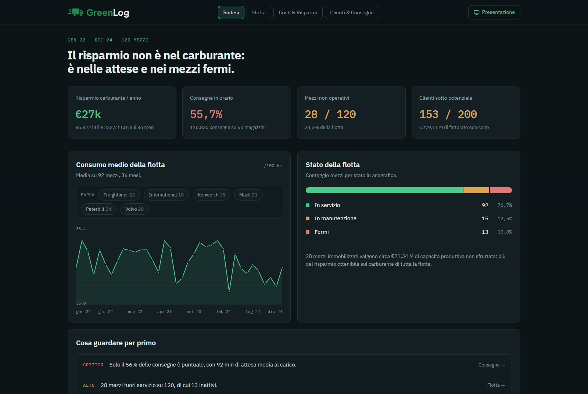

Data Engineering
Dati di flotta che diventano decisioni.
Una piattaforma dati per FTSLog: 120 camion, tre anni di viaggi e sette domande a cui ora rispondono i numeri.

I dati per decidere c'erano già. Stavano in quattro sistemi che non si parlavano.
- GPS
- Posizioni, viaggi e chilometri percorsi da ogni mezzo.
- Gestionale
- Ordini, clienti, carichi e consegne ai magazzini.
- Manutenzioni
- Interventi, costi e ore di fermo per camion.
- Carburante
- Rifornimenti, litri e prezzo pagato al distributore.
- 120camion in flotta
- 36mesi di operazioni, 2022-2024
- 170.820consegne registrate
- 200clienti analizzati
Dal file grezzo alla risposta, in sei passaggi.
Ogni passaggio prepara il successivo. La logica dei KPI vive nel database, così Power BI e la dashboard web leggono gli stessi numeri. Pulizia, modellazione, caricamento e calcolo hanno una pagina di approfondimento.
-
Acquisire
Tre anni di operazioni di trasporto su gomma, in più file CSV.
Kaggle, CSV -
Pulire
Tipi corretti, duplicati e valori mancanti gestiti, miglia e galloni convertiti.
Python, pandasApprofondisci -
Modellare
Schema E-R normalizzato con chiavi esterne e vincoli CHECK e UNIQUE.
MySQLApprofondisci -
Caricare
Un database in cloud condiviso, gli stessi dati per tutto il team.
AivenApprofondisci -
Calcolare
Una view SQL per ogni KPI, con JOIN, subquery e medie ponderate.
SQL, view vw_*Approfondisci -
Mostrare
Report in Power BI e una dashboard web pubblica che legge le view.
Power BI, HTMLVai alla dashboard